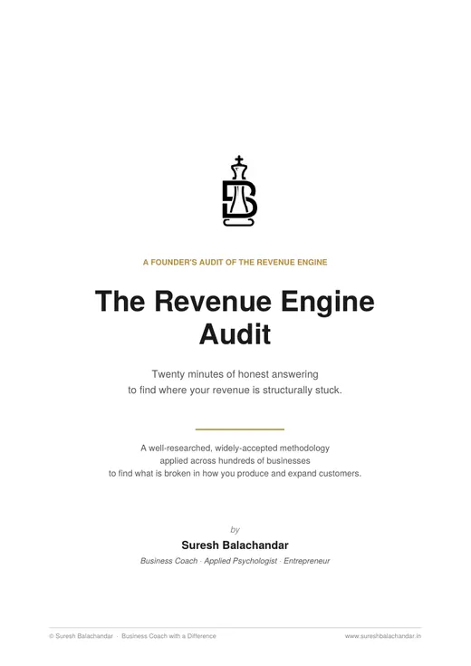
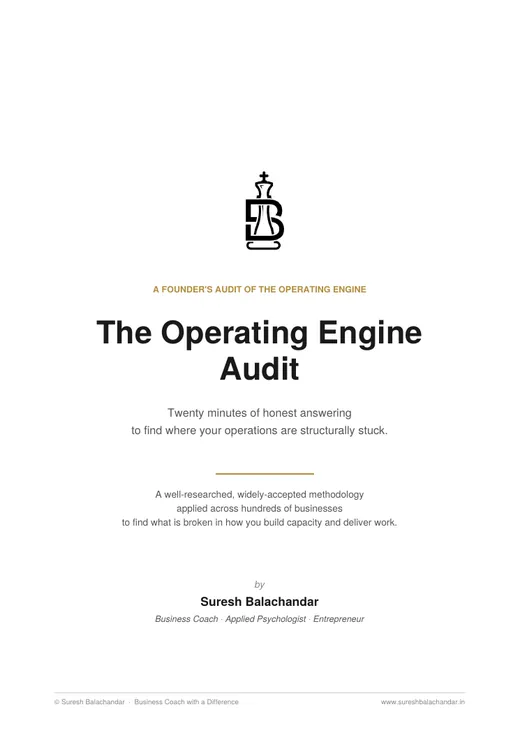
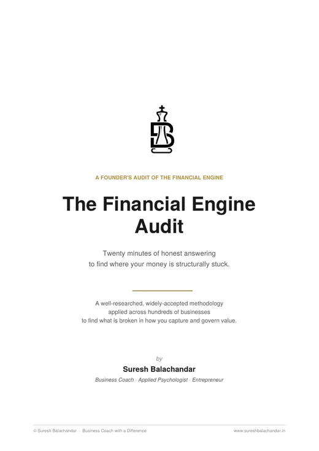

06 · One to one · By application
The Business Machine
3 Engines · 9 Systems · 27 Processes · 1 Machine
A structured, multi month engagement that redesigns your business as a machine. 3 engines that produce the customers, do the work, and govern the money. Built deliberately, documented properly, and the end state is exact: the business runs without you standing in the middle.
Talk to me about the machine Audit your engines first, free
Which of your 3 engines is breaking first? Each one has a free audit below. 20 minutes of honest answering, and a reading that names where it is stuck. Start with the one that hurts.
- Weeklyone fixed day, every week
- Multi montha build, not a course
- Zoom, Meet or my roomwhichever suits you
- By applicationa small number at a time
01 Take these before you talk to me
There are 3 engines and 3 free audits, so start with the one that hurts.
Each audit is 20 minutes of honest answering. 7 dimensions, yes or no questions, and a pattern reading at the end that names where that engine is structurally stuck. They are built on the same architecture I coach against. If what an audit shows you is enough, keep it, act on it, and we are done.

20 minutesFree download · Engine 1 of 3
The Revenue Engine Audit
This one is for the founder whose pain right now is customers, whether that is getting them, converting them, or keeping them. It takes 20 minutes and it gives you a reading of where your revenue is structurally stuck.

20 minutesFree download · Engine 2 of 3
The Operating Engine Audit
For the founder whose pain right now is delivery, team, or execution. 20 minutes, and a reading of where your operations are structurally stuck.

20 minutesFree download · Engine 3 of 3
The Financial Engine Audit
For the founder whose pain right now is margin, cash, or visibility. 20 minutes, and a reading of where your money is structurally stuck.
02 Why this exists
Most founders are the engine. This engagement ends that.
If you run a business between ₹1 crore and ₹100 crore and you are still the bottleneck, more effort will not fix it. Revenue grows because you push it. Quality holds because you watch it. Cash works because the numbers live in your head. The team does not run without you, because the business itself does not run without you. You built it that way without meaning to.
The fix is not working harder, and it is not hiring better. The fix is a different design. You need a machine that does the work the founder used to do, built deliberately, documented properly, and running without you. That is what this engagement builds. It is not a feeling and it is not a breakthrough. It is a machine you can hand to your team, scale, sell, or step away from.
03 What the machine is
3 engines hold 9 systems, the 9 systems hold 27 processes, and together they make 1 machine.
- 013 enginesThe Revenue Engine produces customers and expanding relationships. The Operating Engine produces capacity and delivered work. The Financial Engine governs the money that turns revenue into profit, and profit into a more valuable business.
- 029 systems, 3 inside each engineThe revenue engine holds Marketing, Sales and Customer Lifecycle. The operating engine holds Talent and Resource, Execution and Delivery. The financial engine holds Cash Flow, Profitability and Financial Visibility. Each one has a documented purpose, a defined boundary, and a clear hand off to the next.
- 0327 processes, 3 inside each systemEvery process has named activities, named metrics, and named ownership. A founder who runs them deliberately produces predictable outcomes. A founder who does not produces founder dependent ones.
- 041 integrated machineThe engines connect through specified hand offs and feedback loops. Revenue commits, Operating delivers, Financial captures the value, and the cycle feeds itself.
The 27 processes have names, and each one has its metrics and its owner. Those names are the build itself. I do not publish the build. You meet it in the room, one process at a time.
04 The architecture
The 3 engines run in a causal flow, and 1 track runs alongside them.
- 01The Revenue Engine. Customers in, expanding relationships out.Marketing produces qualified leads. Sales converts them into closed deals. Customer Lifecycle expands each relationship and produces the word of mouth that feeds Marketing again. The result is predictable revenue that does not depend on you personally chasing every deal.
- 02The Operating Engine. Capacity in, delivered value out.Talent and Resource produces the people and the tools the work needs. Execution provides the rhythm and the discipline. Delivery produces the work the customer paid for. The business delivers what Revenue sold, without you personally watching every project.
- 03The Financial Engine. Money in, profit and enterprise value out.Cash Flow keeps the business solvent and pays the owner sustainably. Profitability captures the value through unit economics, pricing discipline, and deliberate cost allocation. Financial Visibility produces the scorecard that lets you run the business from 7 numbers.
- 04The parallel track. Enterprise value, built over years.The engines produce profit this quarter. This track decides whether the business becomes a sellable asset over years. It runs on an annual cycle through 5 drivers: growth, profitability, risk, reinvestment, and time. The drivers are Aswath Damodaran's, and the application is mine.
That is the machine. It is not a metaphor and it is not a slogan. It is the operating architecture that turns a founder dependent business into a system driven one.
05 The cadence
The architecture is also a calendar.
3 engines give the engagement a quarterly rhythm. 9 systems give it a monthly one. 27 processes give it a weekly one. The work does not wander. It moves through the machine, one part at a time.
- 01Weekly sessions, on a fixed dayWe meet on Zoom, on Google Meet, or in my room in Chennai. Each session has 2 halves. The insight builds the next piece of the architecture in your head. The application names the specific work you will do before we meet again.
- 02Application work, between sessionsYou design the process, you document the playbook, and you hold the conversation. The work is concrete and named, and there is no ambiguity about what to do.
- 03Follow up access, when you are stuckYou reach me between sessions. The coaching is alive between the sessions, not only inside them.
- 04Documentation, throughoutEvery system you build is written down as we go, because the documentation is what holds the machine together when you step back. You finish with a documented, operating business machine.
06 The end state
What you hold when the machine is built.
- 01You hold a Revenue Engine that forecasts. You can read the pipeline, customer relationships expand by design, and word of mouth is engineered rather than hoped for.
- 02An Operating Engine that runs without you. Weekly meetings on a documented cadence, a playbook for every recurring process, and a team that delivers while you do the work only you can do.
- 03A Financial Engine you actually understand. 7 numbers on one scorecard that tell you whether the business is winning. Cash that does not surprise you. Profit you actually take home, on a documented schedule.
- 04You hold a more valuable business, built deliberately through the 5 drivers over 3 to 5 years. That gives you negotiating leverage if a buyer ever calls, and a real choice about what you do next.
- 05You hold a different relationship with your business, because you move from operator to owner of a system and from firefighting to architecture.
- 06Documentation that becomes an asset. Every system written down, every process mapped. A business that can be delegated, scaled, transitioned, or sold.
07 Who it is for
I work with businesses between ₹1 crore and ₹100 crore, and I would rather say no upfront than waste your months.
- 01The business turns over between ₹1 crore and ₹100 crore, and it has been running for 3 years or more. There is a real business here, with proven revenue and a pattern that can be read.
- 02You are the founder, and you hold the authority to change how the business is built, not only how you think about it.
- 03You can commit to a multi month engagement, weekly sessions, and weekly application work. The cadence is the leverage, and there is no compressed version that produces the same result.
- 04You have reached the point where you know that working harder will not get you to the next level. The business needs to be redesigned rather than pushed.
Said with respect, and said clearly. If you are still finding what sells, this is the wrong instrument, and I will point you at the right one. If you want a coach to validate decisions you have already made, this work questions your business at the architectural level, and it will not land. And if what you want is energy in the room, this is not that. The work is methodical rather than magical.
08 The application
It begins with the 90 minutes, and the 90 minutes is free.
In 90 minutes on Zoom, on Google Meet, or in my room, we look at your business honestly and locate the engine that is breaking first. At the end we decide together whether this work is right for you. If it is not, I will say so, and point you at what is.
I take a small number of these engagements at a time, because a weekly build does not scale and I will not pretend it does. Pricing is discussed in that conversation, openly, once we both know what would be built. The methodology has been refined across 9 years of coaching 90+ founders across industries.
→ Where this sits